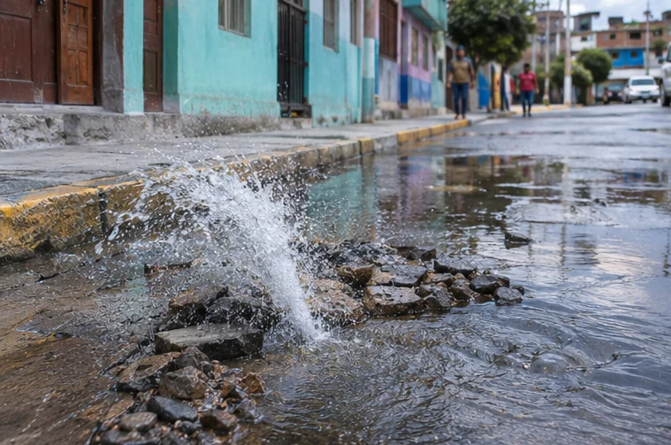
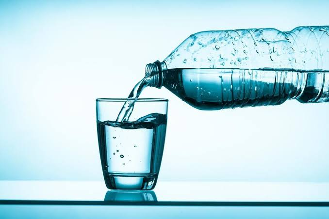
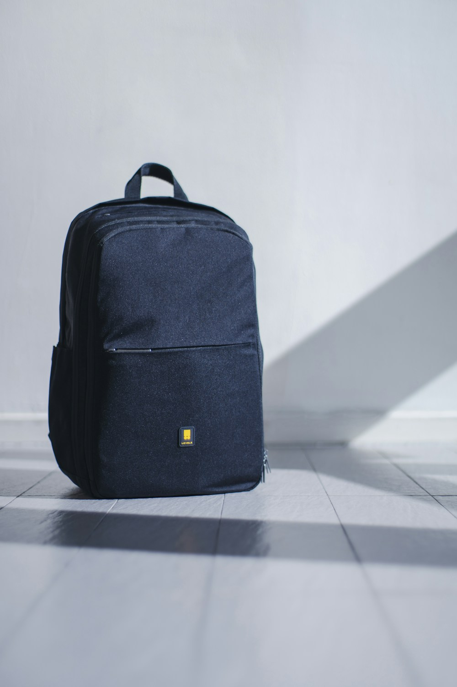

Ubica la incidencia
Captura la posición GPS automática y evidencia fotográfica del daño en la red.
Ver estadosMonitoreo hídrico y gestión WASH
Una fuga sin atender en la comunidad. Un registro en campo sin conexión a Internet. En mWater te ayudamos a monitorear y cuidar el recurso hídrico.
Ver estados Conocer la iniciativaCaso de estudio UX orientado al ODS 6: Agua Limpia y Saneamiento.


Plataforma abierta para agua y saneamiento
mWater es una plataforma digital de acceso abierto orientada a democratizar la gestión de datos sobre agua, saneamiento e higiene (WASH) en comunidades y zonas rurales.
Visibilizar el estado de sincronización de datos en modo offline y facilitar el reporte geolocalizado de incidencias hídricas.
El proyecto se vincula directamente con el ODS 6 para garantizar el acceso a agua segura y reducir el desperdicio.
Un flujo en tres pasos
Captura la posición GPS automática y evidencia fotográfica del daño en la red.
Ver estadosEnvía el reporte en menos de 3 pasos, incluso si trabajas sin señal de Internet.
Probar reporteConsulta el estado de sincronización y seguimiento de tu reporte hídrico.
Ver la guíaPropuesta UX · Visibilidad del estado del sistema
Selecciona un estado de la cola de sincronización para conocer cómo mWater protege tus datos en campo.
Simulación de estados de cola de sincronización offline diseñada bajo principios de usabilidad.
Impacto en la comunidad
Mapeamos puntos de agua e infraestructuras críticas con datos abiertos.
Promovemos el cierre de caños, duchas cortas y la reparación rápida de fugas.
Unimos a ciudadanos, investigadores y gestores para cuidar el agua limpia.


“Cerrar el caño a tiempo y reportar una fuga en la calle evita que se pierdan cientos de litros cada día”.
Testimonio basado en nuestra investigación de usuarios sobre hábitos de ahorro de agua.
HU-03 · Formulario de Reporte Hídrico.
Completa los campos para simular el envío geolocalizado de la incidencia y la obtención de un código de ticket único.
Simulación académica interactiva orientada al ODS 6.
Estado: Activa | Nivel: Normal
Estado: Mantenimiento | Nivel: Alto

Estado: Activa | Nivel: Bajo
Estado: Activa | Nivel: Normal